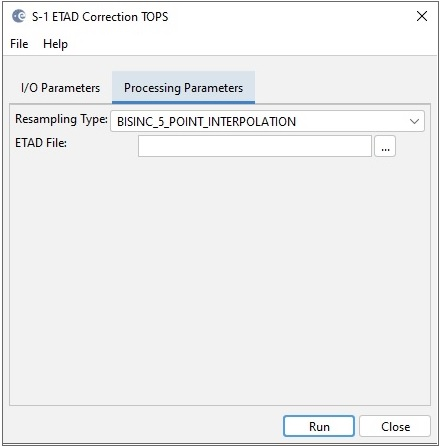

| ETAD Correction for Sentinel-1 Products |
|
The operator applies the ETAD correction to Sentinel-1 TOPS SLC, Stripmap SLC and GRD products. The Extended Timing Annotation Dataset (ETAD) for Copernicus Sentinel-1 is a new auxiliary product developed by ESA (with DLR as contractor), providing users with corrections to improve the geometric accuracy of the Sentinel-1 images. For Stentinel-1 TOPS SLC product, the geometric accuracy can be improved to centimetric levels. The product contains analysis-ready layers for removing the atmospheric path delays, the solid Earth tidal deformation, and the Sentinel-1 system specific effects related to the IPF SAR processor.
The operator
computes for all pixels the range and azimuth offsets using the user
selected ETAD correction layers and resamples the image based on the
computed range and azimuth offsets.

[1] S1-ETAD Project: Product definition Document, Doc. ID ETAD-DLR-PS-0002, Issue 2.4, Date 06.03.2023, Page 1 of 37.
[2] S1-ETAD: Product Format Specification Document, Doc. ID ETAD-DLR-PS-0014, Issue 1.8, Date 06.03.2023, Page 1 of 63.